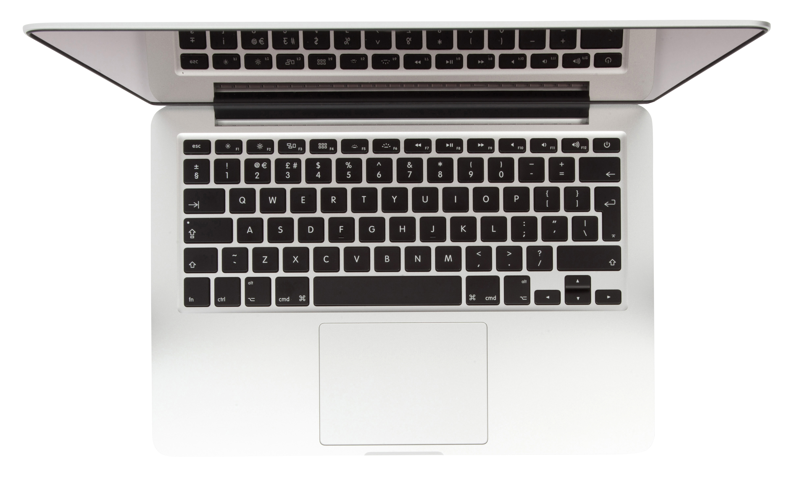
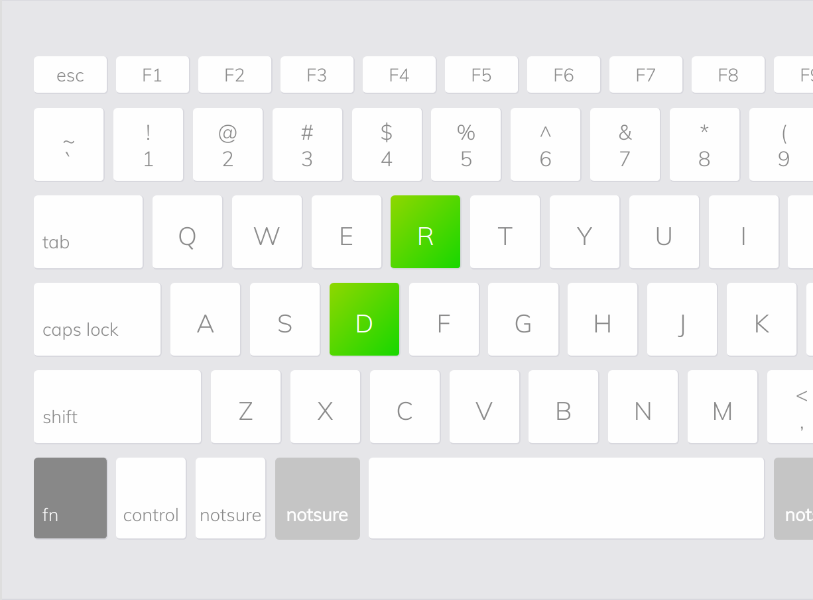
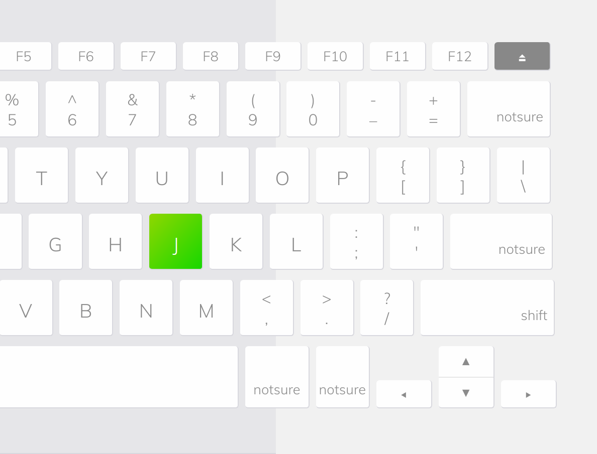
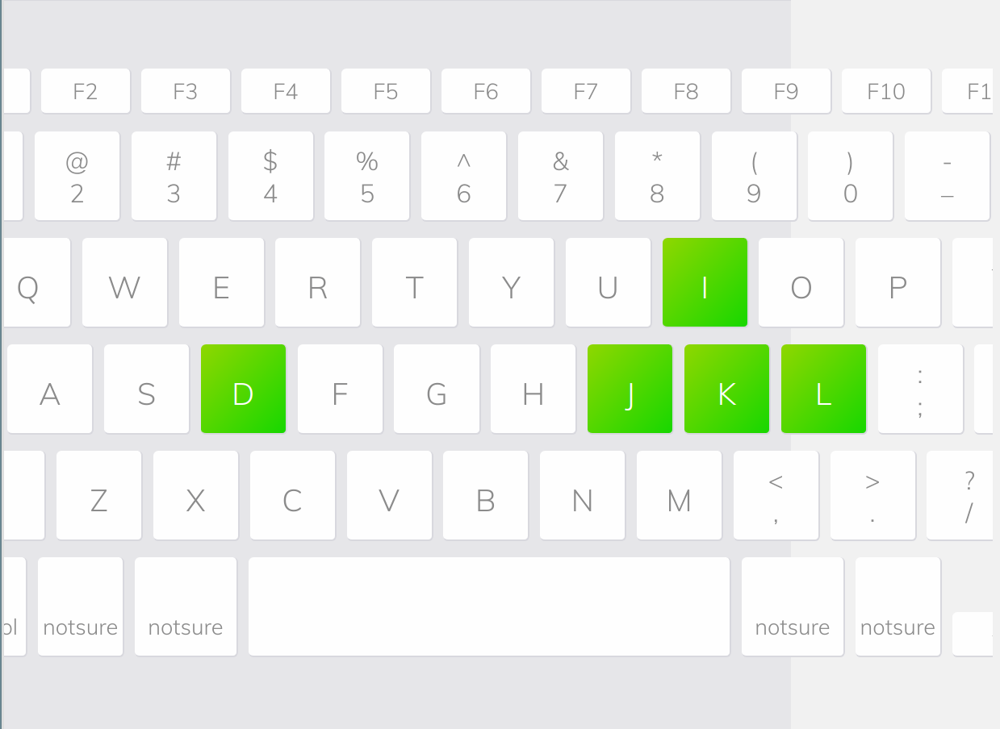
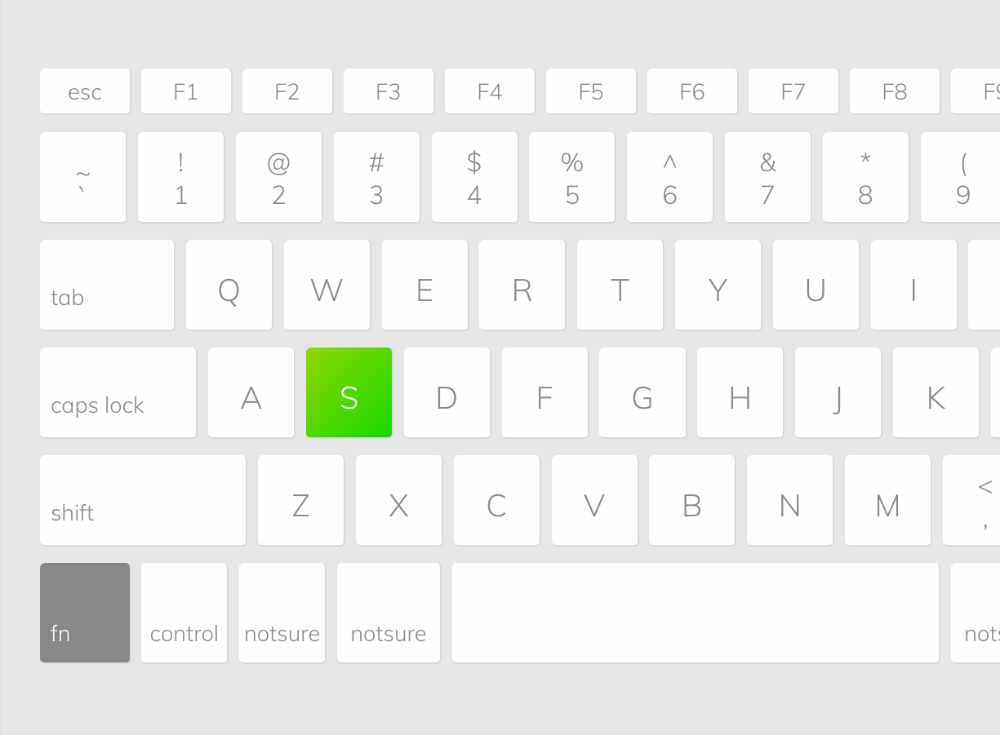
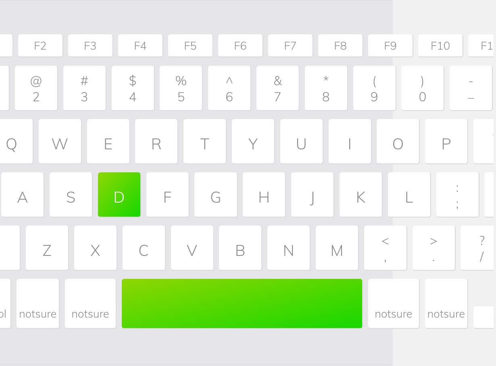
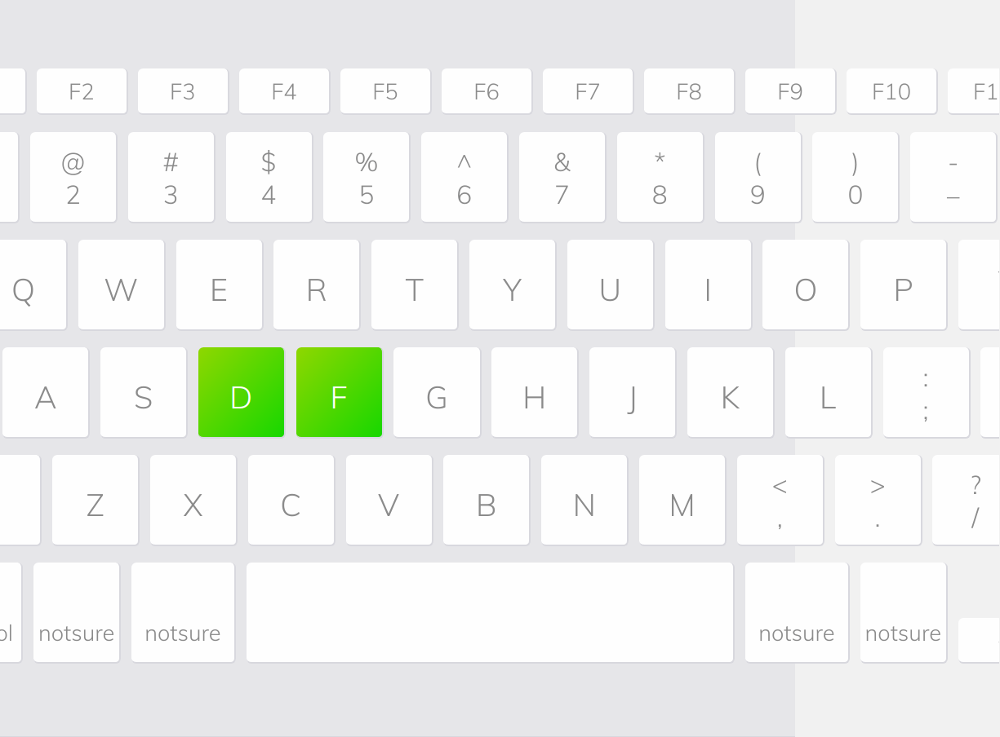
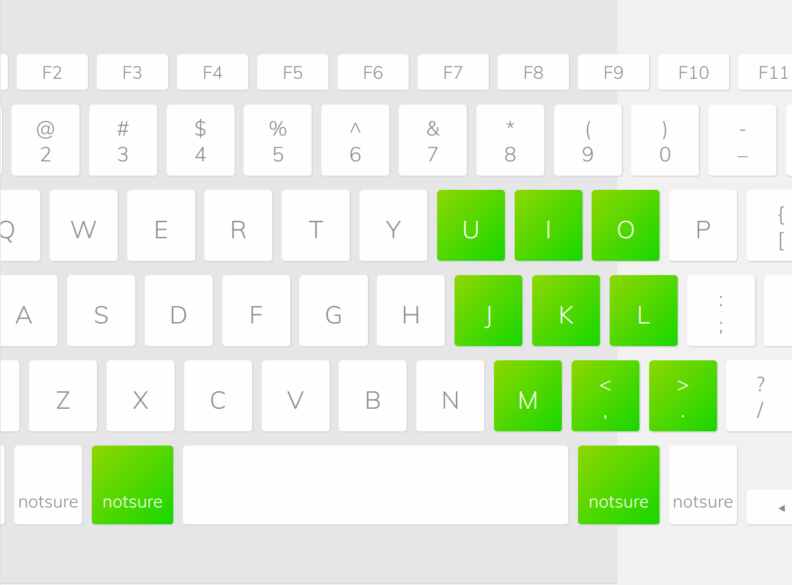
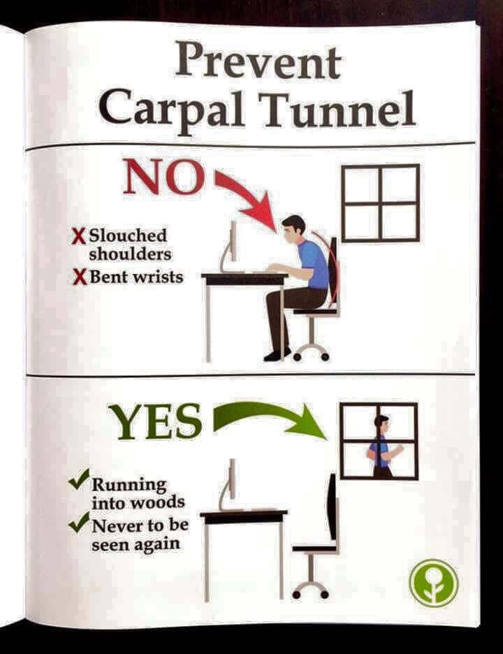

My keyboard tweaks
A few years ago I have started to feel pain in the wrists. So, I was looking for the ways of how to optimize the keyboard interaction. I will share the keyboard tweaks which helped me to avoid pain in the wrists so far.
Environment
The last few years I use MacBook Pro 2015 13-inch display. Laptop powered by Linux (NixOS).

Custom keyboard layout
I have the custom keyboard layout. I have stolen layout from Artyom and extended it afterwards. Custom keyboard layout uses the X keyboard extension. Layout schemes can be found in ~/.config/xkb/symbols folder. I apply the layout on the system startup using:
setxkbmap -layout "us(my),ru(my)" -option "" -option "grp:lctrl_toggle" -print | xkbcomp -I"$HOME/.config/xkb" - $DISPLAYLayout highlights:
• d is the third shift level.
Say, layout scheme has key <AD04> {[ r, R, enfilledcircbullet ]}; line. So, by holding d and pressing r (d + r) we get • (enfilledcircbullet) character.

• Backspace is in place of j

(j moved to the third level: d + p).
• Arrow keys added to the third level (left: d + j, up: d + i, right: d + l, down: d + k).

• Ctrl is in place of s

(s moved to the u, u moved to the {, { moved to the third level: d + t).
• Enter added to the third level: d + space.

• Mouse left click added to the third level: d + f.

I press the keys by left hand and navigate the cursor using touchpad by right hand.
Sticky keys
I made all the modifier keys (including the third level key) to be sticky by using the xkbset program. It runs on the system startup:
xkbset sticky -twokey -latchlock
xkbset mousekeys
xkbset exp 1 =sticky =mousekeys =sticky =twokey =latchlockSay, I want to type R. I can do it in a regular way by holding Shift and pressing r, or I can press Shift, release Shift and then press r.
Emacs
I recommend to use evil mode, unless you have the custom keyboard layout. My current emacs configuration can be found in ~/.emacs.d folder. I won’t go into details, just one thing − I bound avy-goto-word-or-subword-1 to Tab :)
awesome wm
I use awesome window manager having nine workspaces.
To switch the workspace:
| Workspace | Key |
|---|---|
| one | Command + u |
| two | Command + i |
| three | Command + o |
| four | Command + j |
| five | Command + k |
| six | Command + l |
| seven | Command + m |
| eight | Command + < |
| nine | Command + > |

Alternative way
And yet the best way to prevent the wrists pain is:

1min 58sec read